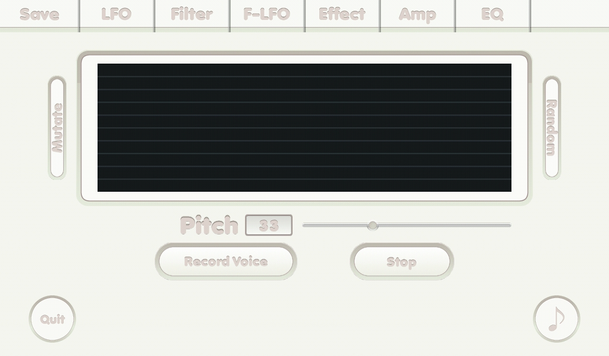

{% include JB/setup %}
Top screen

- Black screen: to show spectrum.
- Random button: randomize all variables.
- Mutate button: change a little of all variables that is checked.
- Pitch control slider: shift pitch.
- Record Voice button: start recording voice.
- Stop button: stop recording voice.
- Check boxes: if it was checked its related number is affected by mutate feature.